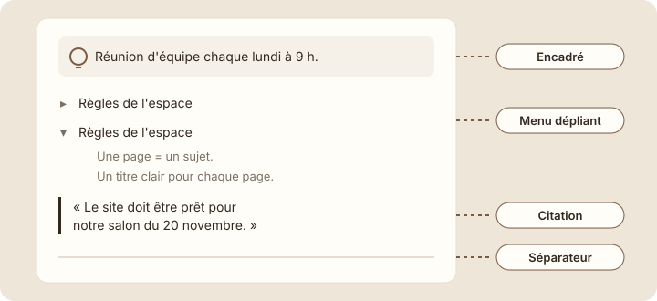
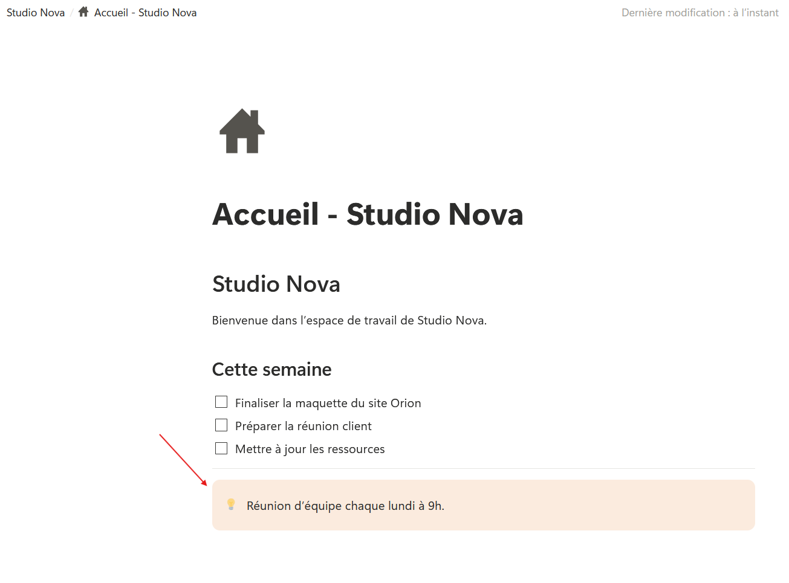
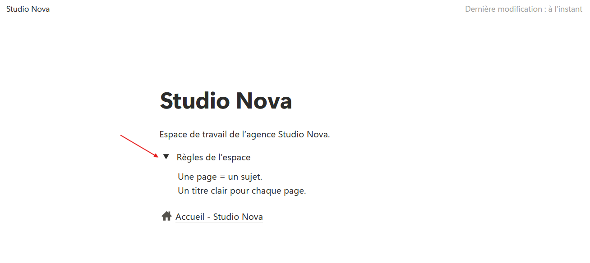

Menus dépliants, encadrés, liens et médias
Étape 1 : comprendre
Avec les titres et les listes, ta page est déjà lisible. Quelques blocs de plus permettent de faire ressortir ce qui compte, de cacher ce qui est secondaire et d'ajouter des documents. Tu n'en as pas besoin partout : ils servent à des situations précises.
| Bloc | À quoi il sert | Exemple chez Studio Nova |
|---|---|---|
| Encadré | Mettre une information importante en avant, dans un cadre coloré avec une icône. | « Réunion d'équipe chaque lundi à 9 h. » |
| Menu dépliant | Replier un contenu sous une ligne. Un clic sur la petite flèche l'ouvre ou le referme. Idéal pour ce qu'on ne lit pas tous les jours. | Les règles de l'espace, repliées sous « Règles de l'espace ». |
| Citation | Mettre une phrase en valeur, avec une barre verticale à gauche. | Une phrase d'un client dans une note de réunion. |
| Séparateur | Tracer une ligne horizontale entre deux parties. | Entre « Cette semaine » et « Liens utiles ». |
| Lien | Ouvrir une page web. Colle une adresse dans la page : Notion propose de l'afficher comme un lien simple ou comme un aperçu. | Le site du client Orion. |
| Image et fichier | Ajouter une image ou un document (PDF, présentation…) depuis ton ordinateur. Tu peux aussi le glisser directement dans la page. | Le logo de Luna, le devis du site Orion. |

L'encadré fait ressortir, le menu dépliant replie, le séparateur découpe.
Attention : si tout est mis en avant, plus rien ne ressort. Garde un ou deux encadrés par page au maximum, pour les informations vraiment importantes.
Ajouter un encadré, un séparateur et un menu dépliant
- Ouvre ta page « Accueil — Studio Nova » et clique sur la ligne vide sous ta checklist.
- Tape « /séparateur » et appuie sur Enter : une ligne horizontale apparaît.
- Sur la ligne vide en dessous, tape « /encadré » et appuie sur Enter. Un cadre coloré apparaît, avec une icône.
- Écris dans l'encadré : « Réunion d'équipe chaque lundi à 9 h. »

- Ouvre maintenant ta page « Studio Nova » (la page principale, pas l'Accueil). Sous ta phrase, tape « /liste » et choisis « Menu dépliant » dans la liste proposée.
- Écris « Règles de l'espace », puis clique sur la petite flèche devant pour l'ouvrir.
- Clique sur la ligne vide qui apparaît à l'intérieur et écris : « Une page = un sujet. » Pour ajouter une deuxième règle, clique d'abord bien à la fin de cette phrase, à l'intérieur du menu dépliant, puis appuie sur Shift + Enter : tu passes à la ligne sans sortir du menu. Ajoute : « Un titre clair pour chaque page. »
- Clique sur la flèche pour refermer le menu dépliant : le contenu disparaît, mais il est toujours là.

Astuce : pour ajouter une image ou un fichier, le plus simple est de le glisser depuis ton ordinateur directement dans la page, à l'endroit voulu. Notion crée le bloc tout seul.
Exercice · dans Notion
Mettre l'essentiel en avant
- Dans ta page d'accueil, ajoute un séparateur sous la checklist, puis l'encadré « Réunion d'équipe chaque lundi à 9 h. »
- Dans ta page « Studio Nova », crée le menu dépliant « Règles de l'espace » avec ses deux règles.
- Ferme puis rouvre le menu dépliant.
Résultat attendu : dans l'Accueil, la checklist est suivie d'une ligne de séparation puis d'un encadré coloré. Dans « Studio Nova », la ligne « Règles de l'espace » affiche ses deux règles quand elle est ouverte, et les cache quand elle est fermée. L'encadré n'est pas encore à sa place idéale : tu le déplaceras à la leçon suivante.
Étape 3 : vérifier
Objectif de la leçon
Tu sais maintenant mettre une information en avant avec un encadré, replier un contenu dans un menu dépliant, séparer des parties, et ajouter un lien, une image ou un fichier.
Choisis une réponse avant de valider.
L'encadré attire l'œil grâce à son cadre coloré et son icône. Un menu dépliant cacherait l'information, et un séparateur ne contient pas de texte.
Choisis une réponse avant de valider.
Le menu dépliant replie la liste sous une seule ligne. Elle reste dans la page et s'ouvre d'un clic quand on en a besoin. Un encadré, au contraire, la mettrait encore plus en avant.
Choisis une réponse avant de valider.
Refermer un menu dépliant ne fait que masquer son contenu. Il réapparaît dès que tu cliques de nouveau sur la flèche.